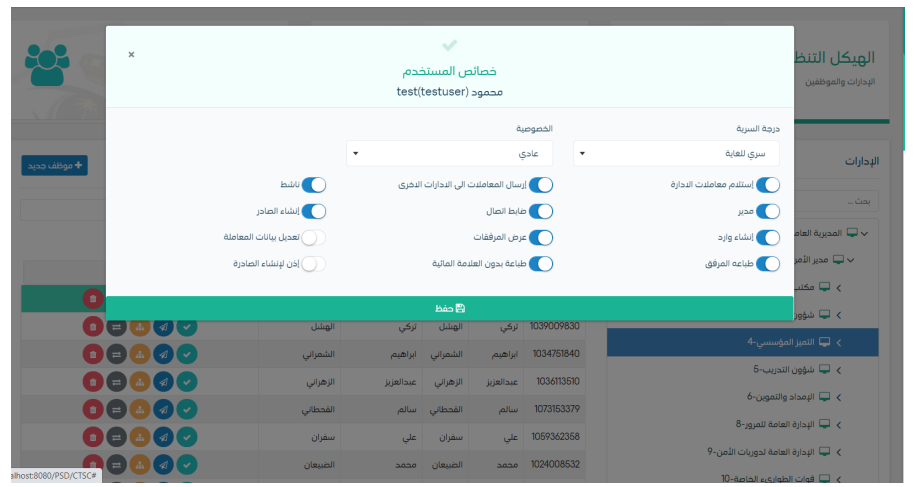

وعند النقر على الاجراء سوف يظهر لك صفحة تتضمن الخصائص التالية كما واضح في الصورة ادناه
سوف يتم عرض الخصائص للموظف وهي على الشكل التالي:
استلام معاملات الادراة: تسمح هذه الخاصية من استلام الموظف والاطلاع على جميع المعاملات الواردة الى الادارة
ارسال معاملات الى الادارات الاخرى: وهي السماح للموظف من ارسال المعاملات الى ادارات خارج ادارته
ناشط: وهي ان الموظف فعال على النظام ويمكنه تسجيل الدخول والعمل على النظام
مدير: وهي صلاحية تعطى لمدراء الادارات والشعب وذلك يكون لديه صلاحيات زيادة عن المستخدمين العادين كالتوقيع الاكتروني واعتماد الخطاب غيرها
ضابط اتصال: وهو الشخص المسؤول عن جهة معينة وفروعها ومسئول عن اعطاء الصلاحيات وهيكلة الادارات في الجهة الذي ينتمي اليها
انشاء صادر: وهي الصلاحية تسمح للموظف من انشاء معاملة صادرة الى خارج قطاع الامن العام وتحويلها الى الاتصالات الادارية لتصديرها
انشاء وارد: وهي صلاحية تسمح للموظف من استقبال المعلاملات الواردة من خارج قطاع الامن العام وتسجيلها في النظام وهذه الصلاحية تعطى الي موظفي الاتصالات الادارية
عرض المرفقات: وهي صلاحية تسمح للمستخدم من عرض المرفقعات والاطلاع عليها
تعديل بيانات المعاملة: وهي صلاحية تسمح للموظف من تعيل بيانات المعاملة في حان هناك اي حاجة الى التعديل
طباعة المرفق: وهي صلاحية تسمح للموظف من طباعة المرفقات ولكن مع العلامات المائية الظاهرة على المرفق وهي رقم المستخدم في الامن العام
طباعة من دون علامات مائية : وهي صلاحية تسمح للموظف من طباعة المرفقات من دون العلامات المائية الظاهرة على المرفق وهي رقم المستخدم في الامن العام وهي صلاحية تعطى الي الاتصالات الادارية في حال هناك حاجة الى طباعة المرفق وارساله الى الجهات الخارجية
اذن لانشاء صادر: وهي صلاحية تعطى الاتصالات الادارية للسماح في تصدير المعلاملات الي خارج قطاع الامن العام
كما يمكننا تعديلها ومن بعدها النقر على حفظ لحفظ التعديلات